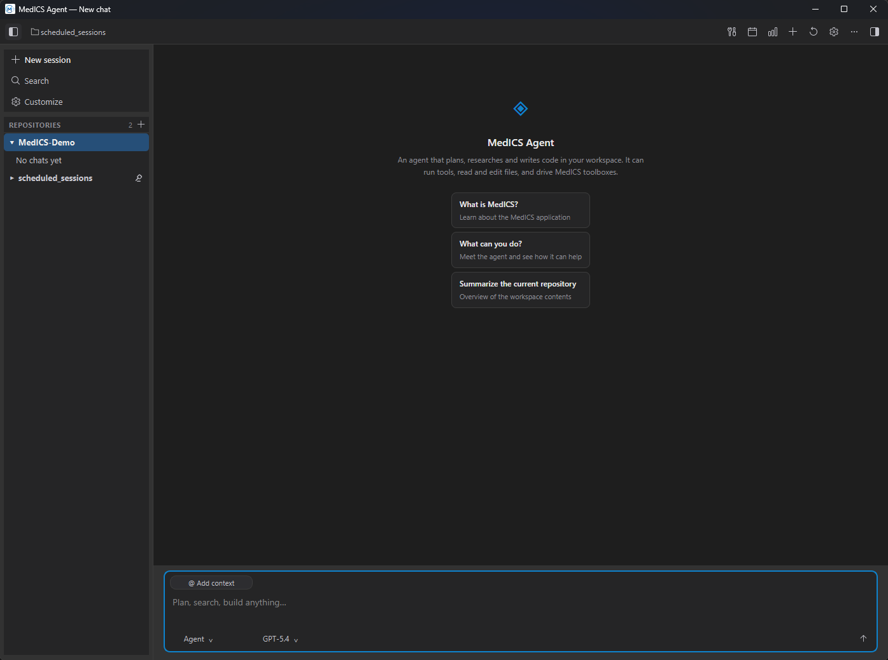
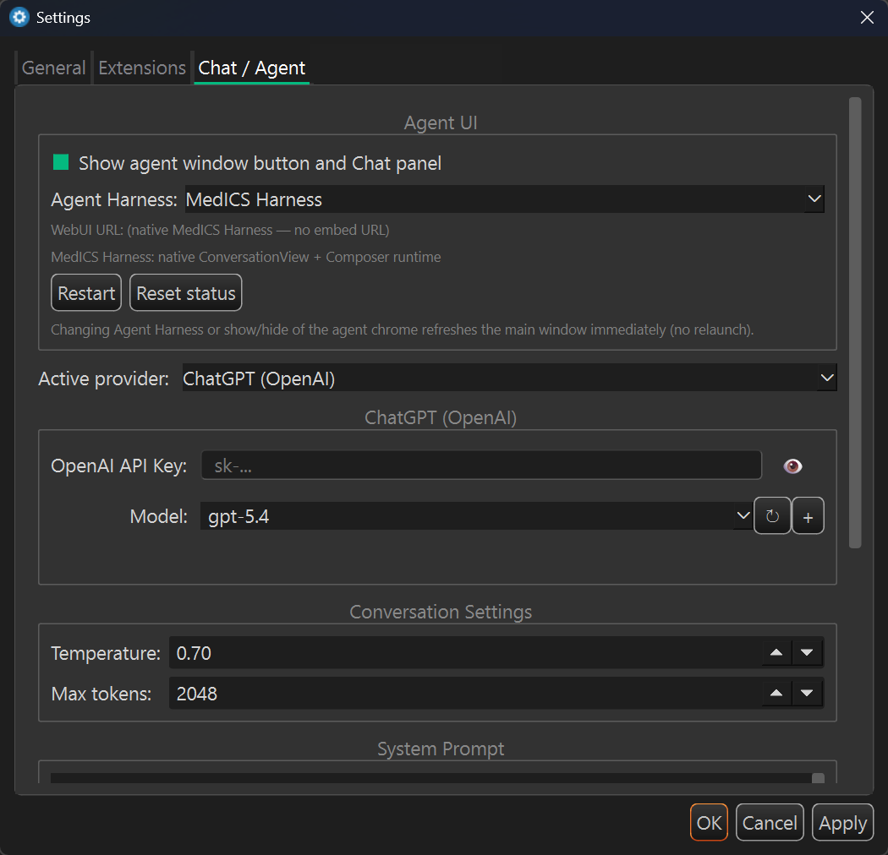

AI assistant
The Agent chat panel is an assistant that can answer questions and carry out tasks in MedICS. You can ask it about the data you have open, or ask it to do something and it will use the tools it needs — reading files, running Python, working with the toolboxes — and report back.
Using the chat
Open the Agent chat panel from the View menu, type a request and send it. While the assistant works you can watch each step it takes. Actions that create or change data ask for your approval before they run.
The Agents Window
The same assistant also opens in its own window (Ctrl+Shift+A, or View → Agents Window). Use it when you want a full-size conversation next to the main window instead of a docked panel, or when you are working across more than one screen. Each conversation is listed on the left, so you can keep several going and switch between them.

What it is good at
- Answering questions about your images, tables and variables.
- Running Python against your live workspace.
- Driving the toolboxes for you — opening a tool, importing, previewing.
- Multi-step tasks that combine the above.
Configuration
Choose the provider and model and enter your API key in Edit → Preferences → Chat. The assistant is optional — MedICS works fully without it.
